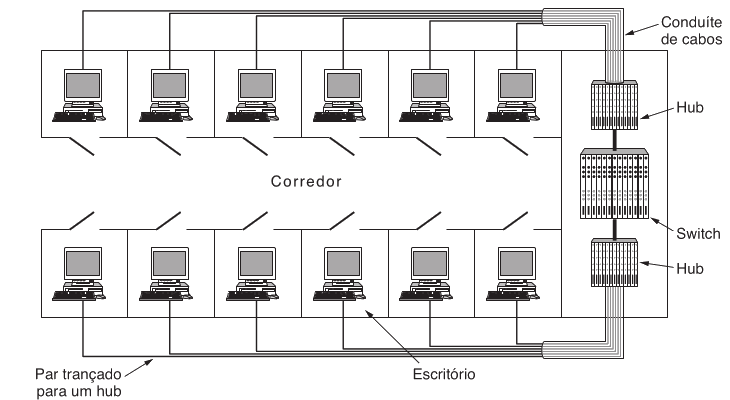
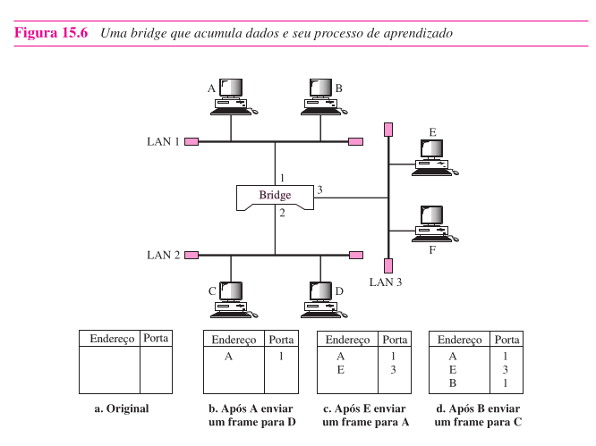
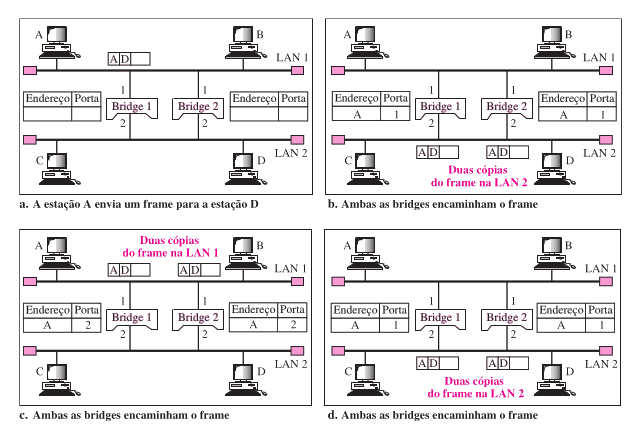
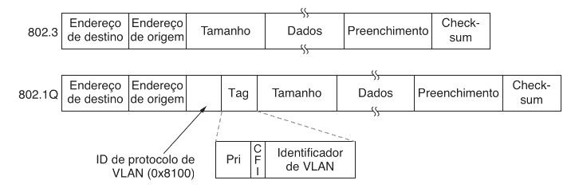

Introdução7.1
Na aula anterior, você viu como a subcamada MAC organiza o acesso ao meio, como a Ethernet evoluiu do barramento para a Ethernet comutada e por que o endereço MAC identifica interfaces no enlace local. Isso resolve uma parte importante do problema, mas ainda falta entender o que acontece no equipamento que fica no centro das LANs modernas.
Hoje você vai ver por que o switch não é apenas uma caixa com várias portas. Ele aprende endereços MAC, decide por onde cada quadro deve sair, reduz tráfego desnecessário e muda profundamente o comportamento da rede local. Depois, avançaremos para as VLANs, que permitem dividir logicamente uma LAN física em vários domínios de broadcast distintos.
O switch é a forma moderna de interligar segmentos Ethernet no nível de enlace. As VLANs expandem essa ideia ao permitir que a topologia lógica da LAN seja organizada por software, e não apenas pela fiação física.
Quando uma LAN única começa a ficar ruim7.2
Imagine uma rede de laboratório com dezenas de computadores ligados ao mesmo equipamento central. Todos usam Ethernet, todos enviam quadros corretamente e todos possuem endereços MAC válidos. Ainda assim, à medida que a rede cresce, começam a aparecer três problemas práticos.
- Muito tráfego passa a ser entregue a lugares onde não deveria.
- Um defeito físico ou uma reorganização de cabos fica mais difícil de administrar.
- O tráfego de broadcast e de descoberta passa a atingir máquinas demais.
Em outras palavras, uma LAN muito grande e totalmente plana é simples de imaginar, mas difícil de escalar com eficiência.
Se um quadro tem um MAC de destino específico, por que a rede inteira precisaria ver esse quadro?
Essa pergunta conduz diretamente ao papel do switch. A ideia é simples. Se o equipamento central souber em qual porta está o destino, ele não precisa repetir o quadro para todos. Ele pode encaminhá-lo apenas pela porta correta.
Do hub ao switch7.3
Na aula passada, você viu que hub e switch não fazem a mesma coisa. Agora vamos aprofundar essa diferença do ponto de vista do encaminhamento.
| Equipamento | O que faz com o sinal ou quadro | Consequência prática |
|---|---|---|
| Hub | Repete o que recebe para todas as portas | Todo mundo vê tudo e o meio continua logicamente compartilhado |
| Switch | Examina o quadro e decide a porta de saída | O tráfego passa a ser mais seletivo e a rede ganha desempenho |
O hub trabalha de forma parecida com um repetidor multiporta. O switch trabalha como uma bridge multiporta, isto é, como um equipamento da camada de enlace capaz de observar os endereços MAC e tomar decisões de encaminhamento.

Dizer que o switch é apenas um hub mais rápido está errado. O switch não só acelera enlaces. Ele muda a lógica de encaminhamento dentro da LAN.
O que o switch realmente observa7.4
Um switch Ethernet opera na camada de enlace. Isso significa que ele toma decisões olhando, antes de tudo, para o cabeçalho MAC do quadro.
Em termos conceituais, ele usa principalmente estes campos.
- Endereço MAC de origem.
- Endereço MAC de destino.
- Em redes com VLAN, possivelmente a tag VLAN.
O ponto mais importante aqui é o seguinte. O switch não precisa abrir o pacote IP para decidir a porta de saída em um switch de camada 2 tradicional. Para o encaminhamento local, basta saber quem enviou, quem deve receber e por qual porta esse destino pode ser alcançado.
O switch não lê a rede inteira7.4.1
Isso ajuda a separar duas ideias que costumam ser confundidas.
| Dispositivo | Decide com base em | Escopo da decisão |
|---|---|---|
| Switch de camada 2 | Endereço MAC | Entrega local no enlace |
| Roteador | Endereço IP | Entrega entre redes |
O switch organiza a comunicação dentro da LAN. O roteador conecta redes diferentes.
O problema da tabela de encaminhamento7.5
Agora surge a pergunta central da aula.
Se um switch deve encaminhar um quadro apenas para a porta correta, como ele descobre qual MAC está em qual porta?
Há duas respostas possíveis.
- Alguém configura tudo manualmente.
- O próprio switch aprende observando o tráfego.
A segunda opção é a que tornou as bridges transparentes e os switches tão práticos. Em vez de exigir configuração manual para cada estação, o equipamento aprende dinamicamente.
Aprendizado de MAC7.6
O mecanismo central de um switch moderno é o aprendizado reverso. A lógica é muito elegante. Sempre que um quadro entra por uma porta, o switch observa o MAC de origem e registra que aquele endereço pode ser alcançado por aquela porta.
Se o switch recebe um quadro cujo MAC de origem é AA:AA:AA:AA:AA:AA pela porta 3, ele aprende o seguinte.
AA:AA:AA:AA:AA:AA -> porta 3
Com o tempo, essa tabela vai sendo preenchida dinamicamente.
Intuição do processo7.6.1
Repare na lógica. O MAC de origem é confiável para aprendizado local porque o quadro veio fisicamente por uma porta específica. Portanto, o switch pode concluir que, pelo menos naquele momento, aquele emissor está atrás daquela porta.
Esse processo não depende de uma grande configuração inicial. O switch aprende observando quem fala e de onde fala.

Exemplo 17.6.2
Suponha um switch com quatro portas.
- O host A, na porta 1, envia um quadro para o host D.
- O switch observa o MAC de origem de A e registra
A -> porta 1. - Como ele ainda não sabe onde está D, ele precisa tratar o destino como desconhecido.
Nesse momento, o switch já aprendeu algo sobre A, mas ainda não sabe onde fica D.
Exemplo 27.6.3
Agora imagine a sequência abaixo.
- A envia para D e o switch aprende
A -> porta 1. - Depois, D responde a A pela porta 4.
- O switch aprende
D -> porta 4. - A partir daí, quadros entre A e D podem ser encaminhados apenas entre as portas 1 e 4.
O ponto importante é que a rede não precisou de uma configuração manual. O próprio tráfego ensinou o caminho ao switch.
Envelhecimento da tabela7.6.4
As tabelas não podem ser permanentes para sempre. Máquinas podem ser desligadas, movidas de porta, substituídas ou conectadas por outro caminho. Por isso, as entradas da tabela MAC costumam ter um tempo de expiração.
Se um endereço ficar muito tempo sem aparecer, sua entrada pode ser removida. Assim, se a topologia mudar, o switch volta a aprender o novo caminho naturalmente.
O aprendizado de MAC não é um cadastro eterno. Ele é dinâmico justamente para manter a rede adaptável a mudanças.
Flood, forward e filter7.7
Uma boa forma de entender o switch é observar que ele toma três decisões básicas para cada quadro.
| Ação | Quando acontece | Efeito |
|---|---|---|
| Flood | O destino é desconhecido ou o quadro é broadcast | O switch replica para várias portas relevantes |
| Forward | O destino é conhecido e está em outra porta | O quadro é enviado só para a porta correta |
| Filter | O destino conhecido está na mesma porta de entrada | O quadro é descartado localmente |
Essas três ações resumem boa parte do comportamento de um switch de camada 2.
Quando o destino é desconhecido7.7.1
Se o switch ainda não sabe em qual porta está o MAC de destino, ele não pode adivinhar. A solução é inundar o quadro, isto é, enviar cópias por todas as portas relevantes, exceto a porta de entrada.
Isso não significa bagunça total. Significa apenas que, na falta de informação suficiente, o switch escolhe uma estratégia segura para aumentar a chance de que o destino receba o quadro.
Quando o destino é conhecido7.7.2
Se a tabela MAC já diz que o destino está na porta 5, o switch encaminha apenas pela porta 5. Esse é o comportamento que reduz tráfego desnecessário e melhora o aproveitamento da LAN.
Quando a origem e o destino estão no mesmo segmento7.7.3
Se um quadro entra por uma porta e o switch já sabe que o destino também está naquela mesma porta, ele não precisa reenviar o quadro por nenhuma outra interface. Nesse caso, ele apenas filtra o quadro.
- A envia para X, ainda desconhecido. O switch faz flood.
- X responde a A. O switch aprende
X -> porta correspondente. - No próximo quadro de A para X, o switch faz forward.
- Se dois hosts estiverem atrás do mesmo hub ligado a uma única porta do switch, quadros entre eles podem levar o switch a concluir que não é necessário reenviar para outras portas da LAN.
O switch melhora desempenho, mas não resolve tudo sozinho7.8
À primeira vista, parece que o switch resolve qualquer problema de LAN local. Isso não é verdade. Ele melhora muito o comportamento da rede, mas ainda existem limites importantes.
O domínio de broadcast continua existindo7.8.1
Mesmo quando o switch encaminha unicast de forma seletiva, quadros de broadcast ainda precisam alcançar todos os membros do mesmo domínio de broadcast.
Exemplos típicos.
- ARP em redes IPv4.
- Descobertas e anúncios locais.
- Alguns protocolos de gerenciamento e inicialização.
Se a LAN cresce demais, o broadcast passa a consumir recursos de máquinas que talvez nem tenham relação entre si.
Tráfego excessivo ainda pode gerar filas7.8.2
Se muitos quadros precisarem sair pela mesma porta ao mesmo tempo, o switch precisa usar buffers. Isso significa que, mesmo sem colisões típicas de hubs antigos, ainda pode haver fila, atraso e descarte por excesso de carga.
Switch elimina a lógica de colisão típica do meio compartilhado clássico, mas não elimina gargalos, filas e sobrecarga por excesso de tráfego.
Quando switches criam loops7.9
Até aqui, o switch parece perfeito. Mas surge um novo problema quando conectamos switches com enlaces redundantes.
Redundância é desejável porque aumenta a tolerância a falhas. Se um cabo se rompe, pode existir outro caminho. O problema é que, na camada de enlace, redundância mal controlada pode criar loops.
Se um quadro de broadcast entra em uma malha com dois caminhos alternativos entre switches, o que impede que ele fique circulando indefinidamente?
Essa é exatamente a razão de existir do mecanismo de spanning tree.
Por que o loop é perigoso7.9.1
Em uma rede com loop de camada 2, um quadro inundado pode circular repetidamente. Isso produz vários efeitos ruins.
- O mesmo quadro pode aparecer muitas vezes.
- O tráfego pode crescer rapidamente e congestionar a LAN.
- As tabelas MAC podem ficar instáveis porque o mesmo endereço parece surgir por portas diferentes.
Em outras palavras, o problema não é apenas “existir mais de um caminho”. O problema é existir mais de um caminho ativo sem um mecanismo de controle.

A ideia da spanning tree7.9.2
O objetivo da spanning tree não é destruir a redundância física. O objetivo é usar a redundância física sem deixar loops ativos na topologia lógica de encaminhamento.
Em termos intuitivos, o algoritmo faz o seguinte.
- Os switches trocam mensagens de controle.
- Escolhem uma bridge raiz.
- Determinam quais portas participarão da árvore ativa.
- Bloqueiam algumas portas redundantes para impedir ciclos.
Assim, a malha física pode continuar existindo, mas a malha lógica usada para encaminhamento de quadros passa a ser uma árvore.
Exemplo simples7.9.3
Imagine três switches formando um triângulo.
- Fisicamente, há três enlaces.
- Logicamente, a spanning tree mantém apenas dois enlaces ativos para encaminhamento.
- O terceiro enlace fica em estado de bloqueio.
Se um enlace ativo falhar, a topologia pode ser recalculada e o enlace antes bloqueado pode assumir o caminho.
O que interessa didaticamente aqui7.9.4
Para esta aula, você não precisa decorar todos os estados e temporizadores do protocolo. O que realmente importa é compreender três ideias.
- Loops de camada 2 são perigosos.
- Redundância física continua desejável.
- A spanning tree transforma uma malha física em uma árvore lógica de encaminhamento.
Em redes reais modernas existem variantes e otimizações do spanning tree. Para a base conceitual da disciplina, basta entender por que a árvore é necessária e o que ela impede.
Bridge e switch são a mesma coisa?7.10
Nos livros, você verá os dois termos aparecerem com frequência.
Historicamente, bridge era o nome usado para o equipamento de enlace que conectava segmentos de LAN. Com o tempo, o termo switch se tornou dominante no mercado, especialmente em Ethernet moderna. Conceitualmente, um switch de camada 2 pode ser entendido como uma bridge multiporta.
Isso explica por que os livros transitam entre esses nomes. O fenômeno de encaminhamento por MAC, aprendizado e filtragem é o mesmo.
Comparação rápida7.10.1
| Termo | Ênfase histórica ou prática |
|---|---|
| Bridge | Nome mais clássico, muito usado em explicações conceituais |
| Switch | Nome dominante em Ethernet moderna e no mercado |
Em resumo, para a lógica desta aula, você pode pensar assim.
$$ \text{switch de camada 2} \approx \text{bridge multiporta} $$
Onde as VLANs entram7.11
Até aqui, a rede ainda está em uma única LAN lógica. Mesmo com switches, todos os hosts podem continuar dentro do mesmo domínio de broadcast, salvo separações físicas específicas.
Agora aparece outro problema de projeto. Em muitos ambientes, a rede física não coincide com a organização lógica desejada.
Por exemplo, imagine uma empresa com três grupos.
- Financeiro.
- Desenvolvimento.
- Laboratório.
Essas pessoas podem estar distribuídas por salas diferentes, andares diferentes ou até switches diferentes. Se a rede depender apenas da posição física de cada cabo, qualquer reorganização exigirá recabeamento ou mudança manual de portas entre equipamentos.
E se fosse possível manter a mesma infraestrutura física, mas separar logicamente quem participa de cada LAN?
Essa é a ideia da VLAN, sigla de Virtual LAN.
VLAN como segmentação lógica7.12
Uma VLAN é uma forma de dividir uma infraestrutura Ethernet em LANs lógicas distintas. Em vez de a pertença a uma LAN depender apenas do cabo ou da sala, ela passa a depender de uma configuração lógica no switch.
O que muda de verdade7.12.1
O efeito principal é este.
Cada VLAN cria seu próprio domínio de broadcast.
Isso significa que uma máquina na VLAN 10 não recebe automaticamente broadcasts da VLAN 20, mesmo que ambas estejam fisicamente ligadas ao mesmo switch.
Exemplo simples7.12.2
Suponha um switch com oito portas.
- As portas 1 a 4 pertencem à VLAN 10.
- As portas 5 a 8 pertencem à VLAN 20.
Se um host da porta 2 envia um broadcast, ele será distribuído apenas às portas da VLAN 10. Os hosts da VLAN 20 não devem receber esse quadro como membros do mesmo domínio lógico.
Por que isso resolve um problema real7.12.3
As VLANs permitem separar tráfego por função, departamento, política ou projeto sem exigir que cada grupo esteja preso a um conjunto fixo de cabos ou a um switch completamente isolado.
Com isso, a rede ganha.
- Melhor organização lógica.
- Redução de broadcast desnecessário.
- Mais facilidade de administração.
- Uma camada extra de separação entre grupos.
VLAN não é sinônimo de segurança completa. Ela ajuda a segmentar e isolar tráfego em camada 2, mas não substitui políticas de firewall, autenticação e controle de acesso em outras camadas.
Como uma VLAN decide quem pertence a ela7.13
Os livros destacam que a participação em VLAN pode ser definida por diferentes critérios. Em prática introdutória, o mais comum é pensar em VLAN por porta.
VLAN por porta7.13.1
Cada porta do switch é associada a uma VLAN.
Por exemplo.
Porta 1 -> VLAN 10
Porta 2 -> VLAN 10
Porta 3 -> VLAN 20
Porta 4 -> VLAN 20
Essa é a forma mais intuitiva de começar, porque conecta diretamente a ideia lógica a uma configuração concreta de portas.
Outros critérios possíveis7.13.2
Dependendo da tecnologia e da política de rede, a pertença também pode considerar.
- Endereço MAC.
- Endereço IP.
- Regras definidas por software de administração.
Didaticamente, o importante é perceber o princípio geral. A VLAN desloca a decisão de agrupamento da fiação física para uma política lógica configurável.
Access e trunk7.14
Se as VLANs existirem apenas dentro de um único switch, a ideia já é útil. Mas a situação mais interessante aparece quando a mesma VLAN precisa atravessar vários switches.
Por exemplo, parte da VLAN 10 pode estar em um switch do laboratório A, e outra parte da mesma VLAN 10 em um switch do laboratório B.
Nesse caso, o enlace entre switches precisa carregar quadros de mais de uma VLAN. É aqui que entram os conceitos de porta de acesso e porta trunk.
Porta de acesso7.14.1
A porta de acesso liga normalmente um host final a uma única VLAN. O dispositivo final costuma enxergar uma rede Ethernet comum. Em termos conceituais, aquela porta pertence a uma única VLAN local.
Porta trunk7.14.2
A porta trunk liga switches entre si, ou liga um switch a outro equipamento capaz de entender várias VLANs. Nesse enlace, quadros de múltiplas VLANs podem trafegar juntos.
Se quadros de VLANs diferentes passam pelo mesmo enlace entre switches, como o equipamento receptor sabe a qual VLAN cada quadro pertence?
A resposta está na tag VLAN, padronizada pelo IEEE 802.1Q.
A tag VLAN e o 802.1Q7.15
O padrão IEEE 802.1Q introduz uma marcação no quadro Ethernet para identificar a qual VLAN aquele quadro pertence quando ele trafega em enlaces que precisam carregar múltiplas VLANs.
Intuição da tag7.15.1
Sem algum identificador, o switch de destino não teria como saber se um quadro que chegou por um enlace tronco pertence à VLAN 10, 20 ou 30.
Com a tag, o quadro passa a carregar explicitamente essa informação.

O que interessa para a aula7.15.2
Para a base conceitual, basta guardar estas ideias.
- O
802.1Qmarca quadros com um identificador de VLAN. - Essa marcação é especialmente importante em enlaces trunk.
- Os switches usam a identificação da VLAN para decidir por quais portas aquele quadro pode seguir.
O campo tecnicamente mais importante para nós aqui é o VLAN ID, que identifica a VLAN à qual o quadro pertence.
Exemplo intermediário7.15.3
Imagine dois switches conectados por um trunk.
- No switch A, a porta 2 pertence à VLAN 10.
- No switch B, a porta 7 também pertence à VLAN 10.
- Um host da porta 2 envia um broadcast da VLAN 10.
- O quadro atravessa o trunk identificado como pertencente à VLAN 10.
- O switch B só replica esse broadcast nas portas que pertencem à VLAN 10, e não nas portas de outras VLANs.
Isso mostra que a VLAN atravessa a infraestrutura física sem virar uma LAN plana única.
Como o switch combina MAC e VLAN7.16
Até aqui, você viu duas ideias separadas.
- O switch aprende endereços MAC.
- O switch separa domínios lógicos com VLANs.
Na prática, essas duas ideias trabalham juntas.
Um mesmo endereço MAC não é interpretado isoladamente de todo o contexto. Em redes com VLAN, o encaminhamento relevante passa a considerar a associação entre MAC e VLAN. Em termos intuitivos, o switch precisa saber não apenas por qual porta um endereço pode ser alcançado, mas em qual domínio lógico aquela decisão faz sentido.
Isso evita, por exemplo, que um quadro aprendido em uma VLAN seja tratado como destino válido em outra VLAN como se toda a LAN fosse única.
Exemplo mais rico7.16.1
Considere um switch com duas VLANs.
- A porta 1 está na VLAN 10.
- A porta 5 está na VLAN 20.
- Um broadcast vindo da porta 1 deve alcançar apenas a VLAN 10.
- Mesmo que existam muitas portas livres ou máquinas ativas na VLAN 20, elas não participam desse broadcast.
Agora suponha que o switch conheça um MAC de destino na porta 5, mas dentro da VLAN 20. Esse conhecimento não autoriza encaminhar para a porta 5 um quadro pertencente à VLAN 10. A segmentação lógica precisa ser preservada.
O que VLAN não faz sozinha7.17
As VLANs resolvem um problema importante, mas não todos os problemas de rede.
VLAN não substitui roteamento7.17.1
Máquinas em VLANs diferentes pertencem, em geral, a domínios de camada 2 distintos. Se elas precisarem se comunicar entre si, é necessário algum mecanismo de roteamento entre VLANs.
Em outras palavras, VLAN separa. Para comunicar domínios separados de maneira controlada, você precisa de camada 3.
VLAN não substitui políticas completas de segurança7.17.2
Separar o broadcast e restringir o encaminhamento local já ajuda bastante, mas não basta para toda necessidade de segurança. É comum combinar VLANs com ACLs, firewalls, autenticação de portas e políticas de rede mais amplas.
Comparação final dos dispositivos7.18
Neste ponto, vale fechar o mapa conceitual dos equipamentos mais importantes vistos até aqui.
| Dispositivo | Camada principal | Unidade observada | Função central |
|---|---|---|---|
| Repetidor | Física | sinal | Regenera e prolonga sinal |
| Hub | Física | bits ou sinal repetido | Replica para todas as portas |
| Bridge / Switch L2 | Enlace | quadro MAC | Filtra, aprende e encaminha localmente |
| Roteador | Rede | pacote IP | Encaminha entre redes |
Perceba a progressão. Quanto mais alto o dispositivo opera na pilha, mais rica é a informação usada na decisão. Ao mesmo tempo, maior tende a ser a complexidade da decisão.
Fechando a ideia7.19
O switch moderno tornou a Ethernet local muito mais eficiente do que o antigo meio compartilhado. Ele aprende endereços MAC, encaminha apenas quando necessário e reduz tráfego irrelevante em muitas situações. As VLANs levam esse avanço um passo adiante ao permitir que a mesma infraestrutura física sustente várias LANs lógicas independentes.
Switches organizam o encaminhamento local por endereço MAC. VLANs organizam quem pertence a qual LAN lógica. Juntos, eles explicam como redes Ethernet modernas conseguem ser ao mesmo tempo escaláveis, administráveis e mais seletivas no tráfego que distribuem.
Questões7.20
1. Explique, com suas palavras, por que um switch não pode ser tratado apenas como um hub mais rápido.
2. Qual é a ideia central do aprendizado de MAC em um switch?
3. Considere a situação abaixo.
- O host A envia um quadro para o host D.
- O switch ainda não sabe em qual porta está D.
Que decisão o switch toma em relação ao destino e por quê?
4. Diferencie as ações abaixo no contexto de um switch:
- flood
- forward
- filter
5. Por que entradas da tabela MAC não devem ser permanentes para sempre?
6. Explique por que enlaces redundantes entre switches podem causar problemas na camada de enlace.
7. Qual é o objetivo conceitual do spanning tree?
8. Dizer que bridge e switch são conceitos totalmente diferentes está correto? Explique.
9. O que é uma VLAN e qual problema ela resolve?
10. Explique por que se diz que cada VLAN forma um domínio de broadcast próprio.
11. Diferencie porta de acesso e porta trunk.
12. Para que serve a tag definida pelo padrão IEEE 802.1Q?
13. Uma máquina da VLAN 10 pode se comunicar diretamente com uma máquina da VLAN 20 apenas porque ambas estão ligadas ao mesmo switch físico? Explique.
14. Marque V ou F.
- ( ) Um switch de camada 2 toma decisões de encaminhamento local observando endereços MAC.
- ( ) Em uma rede com VLANs, broadcasts de uma VLAN devem atingir todas as portas do switch, independentemente da VLAN.
- ( ) O spanning tree procura manter todos os enlaces redundantes ativos ao mesmo tempo para aumentar a velocidade.
- ( ) VLAN ajuda a segmentar logicamente a rede mesmo quando a infraestrutura física é compartilhada.
15. Relacione os itens abaixo com sua função principal.
- hub
- switch
- VLAN
- 802.1Q
1. Porque o hub apenas repete sinais para todas as portas, enquanto o switch observa quadros, aprende endereços MAC e decide por qual porta encaminhar cada tráfego.
2. O switch observa o MAC de origem dos quadros recebidos e associa esse endereço à porta de entrada, construindo dinamicamente sua tabela de encaminhamento.
3. Ele faz flood para as portas relevantes, exceto a porta de entrada, porque ainda não conhece a localização do MAC de destino.
4. Flood ocorre quando o destino é desconhecido ou quando o quadro é broadcast. Forward ocorre quando o destino é conhecido e está em outra porta. Filter ocorre quando o destino conhecido está na mesma porta de entrada e não precisa ser reenviado.
5. Porque máquinas podem ser movidas, desligadas ou reconectadas em outra porta. Sem envelhecimento, a tabela poderia manter informações incorretas.
6. Porque quadros inundados podem circular repetidamente, gerando cópias múltiplas, instabilidade de aprendizado MAC e excesso de tráfego.
7. Criar uma topologia lógica sem loops a partir de uma topologia física que pode ter enlaces redundantes.
8. Não. Conceitualmente, um switch de camada 2 pode ser entendido como uma bridge multiporta. A diferença é mais histórica e de uso prático do termo.
9. VLAN é uma LAN virtual. Ela segmenta logicamente a rede e permite separar grupos e domínios de broadcast sem depender apenas da fiação física.
10. Porque broadcasts gerados em uma VLAN devem ser distribuídos apenas aos membros daquela VLAN, e não às estações de outras VLANs.
11. A porta de acesso normalmente liga um host final a uma única VLAN. A porta trunk transporta quadros de múltiplas VLANs entre switches ou equipamentos compatíveis.
12. Serve para identificar a qual VLAN um quadro pertence, especialmente em enlaces trunk que carregam múltiplas VLANs.
13. Não diretamente. Estando em VLANs diferentes, elas pertencem a domínios de camada 2 distintos. Para comunicação controlada entre elas, é necessário roteamento entre VLANs.
14.
- ( V ) Um switch de camada 2 toma decisões de encaminhamento local observando endereços MAC.
- ( F ) Em uma rede com VLANs, broadcasts de uma VLAN devem atingir todas as portas do switch, independentemente da VLAN.
- ( F ) O spanning tree procura manter todos os enlaces redundantes ativos ao mesmo tempo para aumentar a velocidade.
- ( V ) VLAN ajuda a segmentar logicamente a rede mesmo quando a infraestrutura física é compartilhada.
15. Hub replica sinais para todas as portas. Switch aprende MACs e encaminha quadros seletivamente. VLAN segmenta a LAN em domínios lógicos. 802.1Q identifica a VLAN de um quadro em enlaces apropriados.
Próximos passos7.21
Na próxima aula, o passo natural é sair do enlace local e entrar na lógica de comunicação entre redes.
Você verá como o endereçamento IP organiza hosts e redes, por que MAC e IP coexistem sem disputar função e como a camada de rede passa a decidir o caminho além da LAN local.